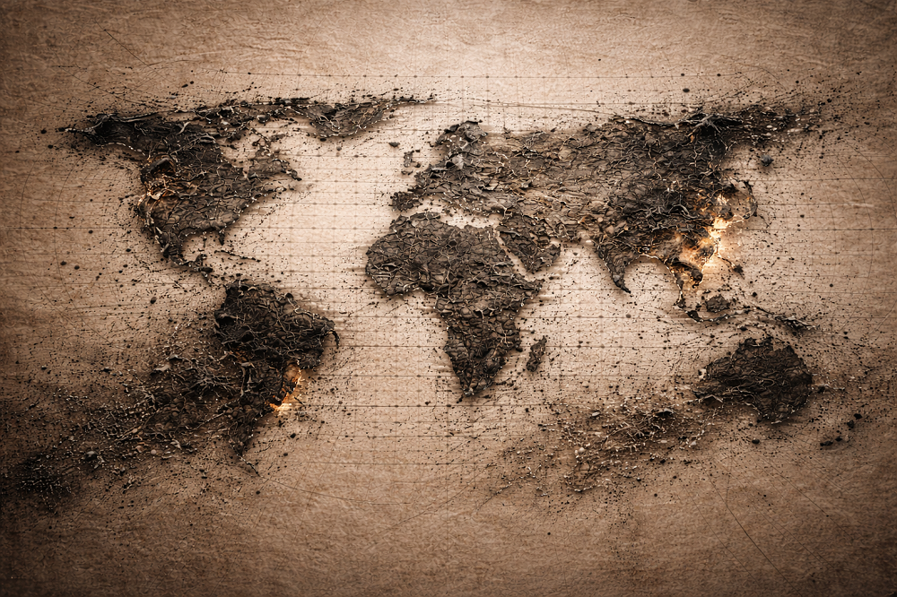

Home > Publications > Archive. Memory and Memoricide
Memory and Memoricide
Archive of publications
The texts gathered in this section explore the fragile yet persistent nature of collective memory and the forces that shape its survival or disappearance. Across reflections on memoricide, cultural erasure, oral tradition, and the role of libraries and archives as memory institutions, these works examine how societies construct, preserve, and transmit the fragments of knowledge that sustain identity and historical consciousness. Drawing on debates from memory studies, archival theory, cultural heritage research, and critical librarianship, and engaging with thinkers such as Maurice Halbwachs, Pierre Nora, Jan Assmann, Paul Ricoeur, and Michel-Rolph Trouillot, the articles consider memory not as a neutral repository of the past but as a contested terrain shaped by power, selection, and loss. From the destruction of archives and libraries to the persistence of memory within rituals, objects, and oral traditions, they analyze the political, cultural, and institutional processes that determine which memories endure, which are silenced, and how knowledge infrastructures — especially libraries — can contribute to protecting cultural diversity and preventing the erasure of historical experience.
Thesis
2023
Civallero, Edgardo (2023). Los tejedores de memorias (Master Degree). Pontificia Universidad Javeriana, Bogotá, Colombia. [Link]
(+) Abstract
This text examines the metaphor of weaving as a conceptual framework for understanding the construction, transmission, and preservation of collective memory. Cultural memory is presented as a fabric composed of countless threads representing experiences, narratives, beliefs, languages, and knowledge systems accumulated across generations. These threads are woven together by individuals and communities through processes of storytelling, ritual practice, artistic expression, and everyday social interaction. Drawing on perspectives from memory studies and cultural anthropology, and resonating with theoretical approaches associated with scholars such as Maurice Halbwachs, Paul Ricoeur, and Jan Assmann, the text explores how collective memory emerges from the dynamic interplay between remembrance and forgetting. Memory is not a complete or stable archive but a constantly reworked tapestry in which fragments of the past are selected, interpreted, and reassembled to shape cultural identity and social belonging.
The essay situates this metaphor within broader debates on cultural heritage, historical narrative, and the politics of memory, emphasizing that the preservation of collective memory depends on a wide range of cultural actors and institutions. Libraries, archives, museums, educators, storytellers, artists, and community knowledge keepers all participate in the ongoing work of maintaining and transmitting the threads that compose social memory. At the same time, these processes are vulnerable to disruption through mechanisms such as cultural homogenization, social marginalization, and the deliberate destruction or suppression of memory — processes frequently described in contemporary scholarship as memoricidio or cultural erasure. The survival of memory therefore depends not only on the preservation of documents and artifacts but also on the vitality of the social practices that sustain them.
By conceptualizing memory as a woven fabric rather than a static archive, the essay highlights the importance of plurality, participation, and cultural diversity in the preservation of historical knowledge. Each generation contributes new threads to the collective tapestry while simultaneously reinterpreting those inherited from the past. In this perspective, safeguarding collective memory requires the active engagement of communities in documenting their histories, preserving their cultural expressions, and ensuring that diverse voices remain visible within the broader narrative of humanity's past. The work of memory weaving thus becomes both a cultural practice and an ethical commitment to sustaining the continuity and diversity of human experience across time.
Articles
2019
Civallero, Edgardo (2019). Memoria colectiva y bibliotecas: apuntes sobre caminos a futuro. Convergências em Ciêmcia da Informação, 2 (2), 1-8. [Link]
(+) Abstract
Collective memory constitutes the cumulative repository of experiences, knowledge, beliefs, and narratives produced by human communities over time, forming a fundamental component of cultural identity and intangible heritage. Drawing on theoretical contributions from scholars such as Maurice Halbwachs, Pierre Nora, Jan Assmann, Elizabeth Jelin, and Michael Pollak, this article explores the conceptual foundations of collective memory and examines its relationship with institutions dedicated to its preservation. Collective memory is understood not as a complete archive of human experience but as a fragile assemblage of surviving fragments shaped by processes of transmission, loss, selection, and memoricide. These fragments form the basis upon which societies construct historical narratives and identities, highlighting the political and cultural stakes involved in determining which memories are preserved and which are marginalized or forgotten.
The article proposes that contemporary libraries must rethink their role as memory institutions by adopting more inclusive strategies for documenting and disseminating cultural knowledge. Emerging technological infrastructures — particularly digital technologies, open knowledge practices, and the interdisciplinary framework of digital humanities described by scholars such as Anne Burdick, Susan Schreibman, and Melissa Terras — offer new possibilities for recovering and circulating collective memory. Through digitization, collaborative knowledge production, open access initiatives, and participatory documentation projects, libraries can help create decentralized and pluralistic memory ecosystems. In this perspective, the preservation of collective memory becomes not only a technical task but also an ethical and political commitment to cultural diversity, democratic access to knowledge, and the construction of more inclusive historical narratives.
2018
Civallero, Edgardo (2018). Retazos para evitar un memoricidio. Gazeta del Saltillo, (3), 1-15. [Link]
(+) Abstract
This article reflects on the fragility of collective memory and the processes through which human societies preserve, transmit, and lose the knowledge that constitutes their cultural identity. The author conceptualizes collective memory as the cumulative repository of human experiences, beliefs, and interpretations of the past, constructed through written, oral, and cultural transmission. Yet only a small fraction of this memory survives across generations, while much of it disappears or is deliberately erased through processes described as "memoricidio" — the intentional destruction or suppression of cultural memory. Historical narratives and collective identities are therefore built from incomplete fragments of preserved knowledge, assembled into interpretive reconstructions that shape how communities understand their past and themselves.
The article examines the role of memory institutions — particularly libraries, archives, and similar cultural repositories — in safeguarding these fragments of collective memory. While such institutions are tasked with collecting, organizing, and preserving cultural heritage, their practices are often shaped by structural biases that privilege written sources, authorized narratives, and dominant social groups. As a result, many voices remain underrepresented or excluded from institutional collections, including those of Indigenous peoples, rural communities, marginalized social groups, and individuals whose knowledge circulates primarily through oral or informal channels. These selection processes, influenced by colonial legacies and social hierarchies, determine which memories are preserved and which disappear, reinforcing existing inequalities within the historical record.
The author argues that memory institutions must adopt more inclusive and socially responsible strategies for preserving and disseminating knowledge. This involves recognizing the plurality of cultural memory, incorporating diverse forms of expression and transmission, and actively engaging with communities to document and preserve their histories. By expanding their collections beyond dominant narratives and dismantling institutional barriers that restrict access to knowledge, libraries and archives can contribute to the creation of more pluralistic, equitable, and resilient societies. The preservation of diverse memories is therefore not merely a technical or archival task but a fundamental ethical responsibility in preventing the erasure of cultural identities and historical experiences.
2007
Civallero, Edgardo (2007). Cuando la memoria se convierte en cenizas: Memoricidio durante el siglo XX. Revista de Bibliotecología y Ciencias de la Información, 10 (15), 1-13. [Link]
Civallero, Edgardo (2007). When memory is turn into ashes… Memoricide during XX century. Information for Social Change, (1), 7-22. [Link]
(+) Abstract
The destruction of archives, libraries, manuscripts, and documentary repositories has repeatedly accompanied political violence and armed conflict, revealing that warfare is not directed solely at territory or populations but also at memory itself. This phenomenon, often described as memoricide, refers to the deliberate annihilation of the cultural and documentary heritage through which communities preserve identity, history, and collective knowledge. From the destruction of the National and University Library of Bosnia and Herzegovina during the siege of Sarajevo in 1992 to the burning of the Oriental Institute and the systematic targeting of cultural institutions during the Yugoslav wars, such acts illustrate how cultural heritage becomes a strategic objective in campaigns of ethnic cleansing and ideological domination. By erasing archives, manuscripts, and bibliographic collections, aggressors seek to dismantle the symbolic foundations that sustain the historical continuity and cultural legitimacy of their adversaries.
The twentieth century offers numerous examples of memoricide linked to war, authoritarian regimes, and nationalist conflicts. The destruction of the National Library of Cambodia under the Khmer Rouge, the Taliban's attack on the Nasser Khosrow Foundation library in Afghanistan, the burning of the Jaffna Public Library in Sri Lanka, and the devastation of Palestinian cultural institutions in Ramallah illustrate how documentary heritage becomes entangled in broader struggles over identity, language, and political sovereignty. Comparable processes occurred during the Second World War, when aerial bombardments, ideological censorship, and systematic confiscation campaigns led to the loss of millions of books and manuscripts across Europe and Asia. Nazi book burnings, the operations of Brenn-Kommandos targeting Jewish libraries in occupied Poland, and the confiscation of cultural collections in Central and Eastern Europe demonstrate how the destruction of written culture functioned as a component of broader policies of persecution, assimilation, and cultural erasure.
Despite the scale of these losses, the history of memoricide also includes efforts to reconstruct and safeguard cultural memory through international cooperation, archival reproduction, and the dissemination of documentary heritage. Initiatives coordinated by organizations such as UNESCO, as well as collaborative recovery programs involving institutions like the Library of Congress and numerous national libraries, have enabled partial restoration of collections destroyed by war or ideological repression. These experiences highlight the fragile material foundations of cultural memory and underscore the strategic role of libraries, archives, and information professionals in protecting documentary heritage. In this context, the preservation, duplication, and open circulation of knowledge emerge as crucial strategies for resisting the deliberate destruction of memory and ensuring the continuity of cultural identity across generations.
Conferences
2019
Civallero, Edgardo (2019). Memoria, bibliotecas y humanidades digitales. 4° Jornada Científica da Rede Mussi. Escola de Ciência da informação, Belo Horizonte. [Link]
(+) Abstract
The preservation and transmission of collective memory constitute a central challenge for contemporary knowledge institutions, particularly libraries and archives responsible for safeguarding the documentary traces of human experience. Drawing on theoretical frameworks developed by scholars such as Maurice Halbwachs, Pierre Nora, Jan Assmann, and Hugh A. Taylor, this article examines collective memory as the cumulative repository of experiences, knowledge, narratives, and cultural practices produced by human communities over time. Because only fragments of this vast mnemonic heritage survive processes of transmission, selection, and loss — including deliberate acts of memoricide — the construction of historical narratives and social identities inevitably depends on partial and contested documentary records. In this context, the management of memory within libraries raises critical questions regarding which discourses, practices, and representations are preserved, which are marginalized, and how institutional policies shape the long-term visibility of cultural knowledge.
The article analyzes libraries as key institutions of memory management, responsible not only for collecting and organizing documentary heritage but also for facilitating access, circulation, and reinterpretation of the knowledge they preserve. However, traditional library collections frequently privilege written and institutionally authorized sources, reproducing structural biases that reflect colonial epistemologies and social hierarchies. As a result, many voices — particularly those of Indigenous communities, marginalized social groups, and oral knowledge traditions — remain underrepresented within documentary infrastructures. These dynamics demonstrate that the organization of cultural memory is never neutral; rather, it is shaped by political, cultural, and epistemological frameworks that determine which memories become part of the historical archive and which are excluded from it.
Within this evolving landscape, the emergence of information and communication technologies (ICT) and the interdisciplinary field of digital humanities — discussed by authors such as Anne Burdick, Susan Schreibman, and Melissa Terras — introduces new possibilities for the recovery, preservation, and dissemination of collective memory. Digital infrastructures enable the digitization of heritage collections, the creation of distributed repositories, the use of rich metadata systems, and the development of collaborative knowledge environments based on open access, networking, and community participation. These transformations suggest a shift toward more decentralized and participatory models of cultural memory management, in which libraries operate not only as custodians of documents but also as platforms for collaborative knowledge production and plural historical narratives. In this perspective, the future of memory institutions lies in integrating critical reflection, technological innovation, and inclusive cultural policies to ensure the preservation and accessibility of humanity's diverse mnemonic heritage.
2017
Civallero, Edgardo (2017). Recuperando las hebras que nos componen. III Encuentro INELI Iberoamérica "Las bibliotecas públicas como artífices de la construcción del tejido social". CERLALC-UNESCO, Fundación Germán Sánchez Ruipérez, Medellín, Colombia. [Link]
(+) Abstract
This paper examines the relationship between social cohesion, cultural memory, and public libraries through the metaphor of the social fabric, conceptualizing societies as complex networks of interconnected threads composed of identities, traditions, values, and knowledge systems. Drawing on examples from Latin American contexts and referencing Indigenous epistemologies such as Aymara, Quechua, Mapuche, Wichi, Qom, Shipibo, and Otavaleño traditions, the text argues that traditional knowledge, particularly oral tradition, constitutes a fundamental infrastructure for sustaining community resilience and collective identity. Oral narratives, ritual practices, artistic expressions, and locally transmitted ecological and historical knowledge function as repositories of intangible cultural heritage, preserving cosmologies, ecological knowledge, languages, and social norms that often remain absent from written archives and institutional documentation. The erosion of these knowledge systems, especially among Indigenous peoples, Afro-descendant communities, and marginalized rural or urban groups, contributes to the weakening of the social fabric and to the global homogenization of cultural memory.
Within this framework, public libraries are repositioned as critical actors in the preservation, organization, and circulation of community knowledge. Rather than functioning solely as repositories of written materials, libraries are presented as institutions embedded within the social fabric, capable of supporting community resilience through inclusive knowledge management practices. Drawing on principles associated with critical librarianship, social librarianship, and progressive library theory, as well as international frameworks such as the IFLA–UNESCO Public Library Manifesto, the paper advocates for the systematic incorporation of oral traditions, local memory, and non-textual knowledge forms into library collections and services. This includes the documentation of oral histories, the preservation of cultural expressions encoded in textiles, music, ritual, and storytelling, and the development of participatory community archives that reflect diverse epistemologies and historical experiences.
The paper further argues that integrating traditional knowledge into library practice represents a form of social innovation grounded not in technological disruption but in the recovery and reactivation of existing cultural resources. By combining traditional knowledge systems with contemporary information tools and digital platforms, libraries can strengthen social ties, combat cultural marginalization, and support processes of community self-recognition and dialogue. In this sense, the preservation and activation of traditional knowledge within library institutions becomes a strategy for reinforcing social cohesion, protecting cultural diversity, and sustaining plural forms of memory within an increasingly unequal and rapidly transforming global society.
Others
2020
Civallero, Edgardo (2020). Las huellas de la memoria. Pre-print. [Link]
(+) Abstract
This essay explores the persistence and transmission of collective memory through cultural artifacts, oral traditions, and symbolic practices that survive across time despite processes of displacement, colonization, and historical rupture. Through a narrative reconstruction that moves across different historical moments — from Central African religious traditions and the transatlantic slave trade to colonial societies in the Pacific region of Colombia and contemporary anthropological research — the text examines how fragments of memory endure within ritual objects, ceremonial practices, and cultural expressions. Drawing on historical, linguistic, and ethnographic references, the essay traces the possible trajectory of certain ritual staffs and symbolic figures associated with healing and spiritual mediation, linking Central African nkisi traditions with ritual practices documented among Indigenous communities of the Colombian Pacific.
The text situates these cultural continuities within the broader historical context of Atlantic slavery, cultural exchange, and forced migration, emphasizing how enslaved Africans transported languages, beliefs, ritual knowledge, and artistic forms across the ocean despite the violence of the slave trade. Within colonial territories such as Cartagena de Indias, Iscuandé, and the Chocó region, interactions between African, Indigenous, and colonial societies created complex processes of cultural transmission and transformation. Practices such as the Afro-Caribbean funerary ritual lumbalú, the symbolic figures used in Central African spiritual traditions, and the ritual staffs employed by Indigenous jaibaná healers illustrate how memories embedded in objects, gestures, and songs can persist and adapt across generations. These traces — often invisible to official histories — constitute material and symbolic evidence of long-term cultural continuities shaped by diaspora, resistance, and intercultural contact.
By reconstructing these historical pathways, the essay argues that cultural memory frequently survives not through formal archives but through dispersed "traces" embedded in artifacts, rituals, languages, and embodied practices. Such traces challenge linear historical narratives and highlight the complex entanglements of African, Indigenous, and colonial histories in the Americas. The persistence of these mnemonic fragments demonstrates how collective memory can endure across centuries of violence and displacement, leaving subtle but meaningful imprints in contemporary cultural landscapes. In this sense, the study of cultural objects, ritual traditions, and historical narratives becomes a way of recovering the hidden genealogies of memory that connect communities across continents and historical periods.